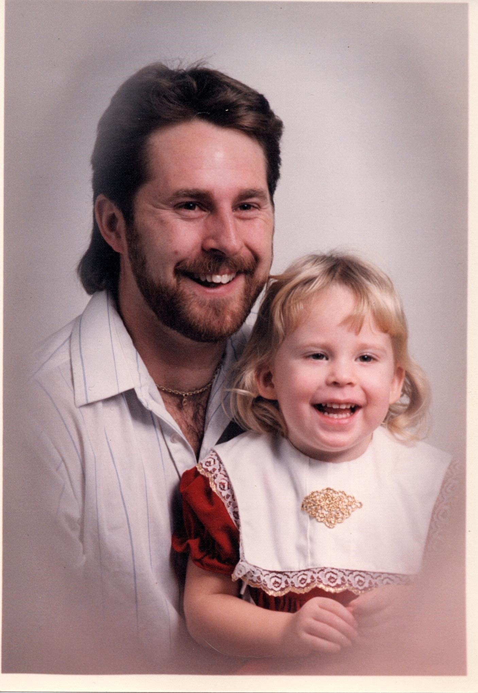
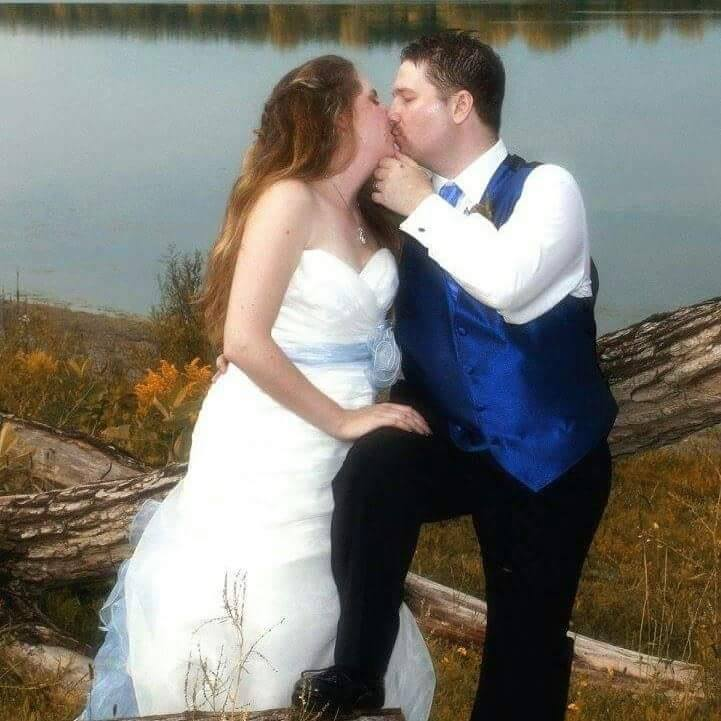

All About Shannon
 My name is Shannon Stoltz-Limin, I'm 26 years old, a wife, mother of four furbabies (3 cats and a dog)Kira, Jacy, Merlin and Lalit;, a video gamer, movie and book addict. I'm also a writer who's aspiring to become published, I have many manuscripts in progress, only one is complete, just waiting to be edited before I can send it off. Writing to me is as necessary as breathing, if I go too long without writing something not school related, I hit a really low point mentally and have a hard time functioning like a regular human being. Which means, I don't sleep, I lose focus and can't concentrate on important things (like school work etc), and overall really hard to be around. It's a way to keep my emotions under control, I guess is the best way to put it. Besides that, I'm new to 'planning', and I have to say I'm addicted to it too. I don't go anywhere without it, which is a good thing because I contantly have a pen and paper incase inspiration hits.
I married my best friend Dominic on September 4th, 2015. He's one of my best friends and my rock. He's also put up with me figuring out what I want to do with my life, this is my 4th program and 3rd college in about 7 nearly 8 years. I'm looking forward to sticking with this one and getting a good career out of it.